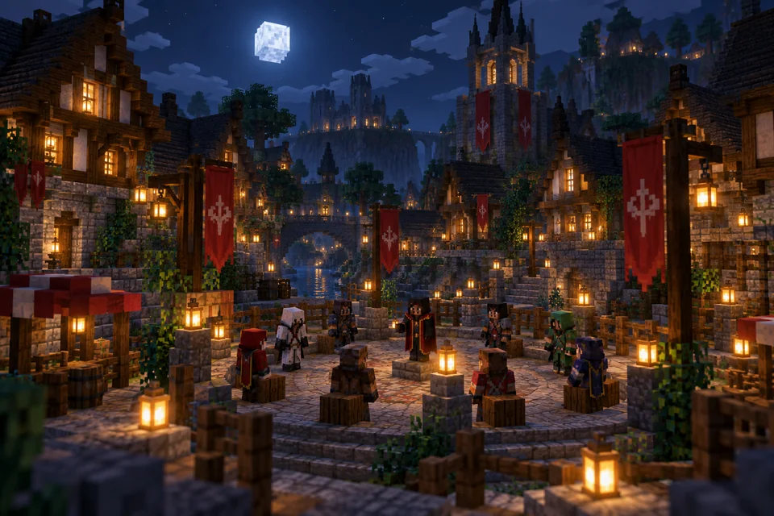

Rob's Village
Köye gece çöktüğünde herkesin bir sırrı var. Rolünü öğren, ipuçlarını birleştir ve gündüz oylamasında doğru kişiyi seç. Bazen en iyi dostun bile bir kurt olabilir.
- Oyun türü
- Sosyal çıkarım
- Temel döngü
- Gece · Gündüz · Oylama
- Roller
- Köylüler, kurtlar ve özel roller
- Katılım
- Lobiden etkinlik sunucusuna

Gece saklan. Gündüz konuş.
Rolünü öğren
Maç başlarken rolün ve takımın belli olur. Her rolün hedefi ve kullanabileceği yetenekler farklıdır.
Gece hamleni yap
Gece yeteneklerini rolüne göre kullan. Diğer oyuncuların davranışlarına ve ortaya çıkan ipuçlarına dikkat et.
Köyü ikna et
Gündüz şüphelerini paylaş, savunmaları dinle ve oylamaya katıl. Takımının kazanması için doğru kişiyi bul.
Bir sonraki maça hazırlan
Oyun lobisi ve harita seçimi
Etkinlik sunucusuna katıldığında oyun menüsünden sıraya gir. Yeterli oyuncu olduğunda geri sayım başlar. Maç öncesi harita oylamasına katıl; oy kullanılmazsa harita rastgele seçilir.
Birlikte, adil oyna
Ölen oyuncular yaşayanlara bilgi vermemeli. Rolünü dışarıdan haberleşerek açığa vurmak veya oyunu sabote etmek diğer oyuncuların deneyimini bozar.
Sunucu kurallarıKöy ne zaman toplanıyor?
Etkinlik saatleri ve topluluk oyunları Discord'da duyurulur. Sunucunun açık olup olmadığını canlı durum sayfasından görebilirsin.